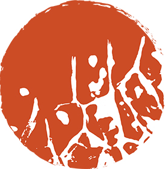

Identité visuelle du restaurant gastronomique d'application du Lycée hôtelier Renée Bonnet.

Ce logo affirme un lien important avec la terre et le terroir en tant que vecteurs d'une forte identité régionale aussi bien que culinaire.

C’est une empreinte de chou qui décore cette médaille orangée. Elle suggère un mouvement, une brigade, en plus de symboliser des racines.

Nos couleurs souligent aussi une volonté de suggérer les valeurs du projet : un orange comme compromis entre terre et briques ainsi qu’un violet végétal et alimentaire inspiré du chou rouge.